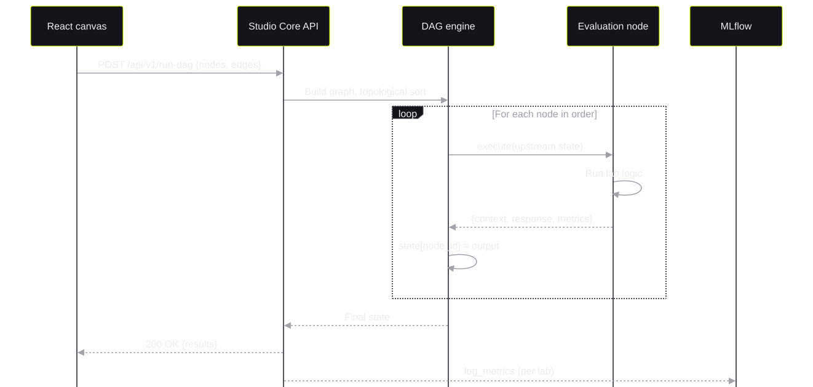

LLMOps Studio
A DAG-based evaluation platform for local LLMsYerel LLM'ler için DAG tabanlı bir değerlendirme platformu
*nine repositories that replace one-time evaluation scripts**tek kullanımlık değerlendirme script'lerinin yerini alan dokuz repo*I built a 9-repository open-source platform. Users connect evaluation experiments as drag-and-drop DAG nodes, and MLflow records each run. An explicit output contract makes every node safe to score.
9 repo'luk açık kaynak bir platform geliştirdim. Kullanıcılar değerlendirme deneylerini sürükle-bırak DAG node'ları olarak bağlar ve MLflow her çalıştırmayı kaydeder. Açık bir çıktı sözleşmesi, her node'un güvenle puanlanmasını sağlar.
- rolerol
- Creator and architect (self-initiated)Kurucu ve mimar (kişisel girişim)
- stackteknoloji
- Python · FastAPI · React Flow · LangChain · LangGraph · Ollama · ChromaDB · MLflow · DeepEval · Prometheus/Grafana · Docker Compose
1. The problem1. Problem
LLMOps Studio started as the test harness for my thesis demo, Finwise Scribe. I evaluated local LLM pipelines with one script for each experiment. I had one script for RAG chunk sweeps, one for prompt A/B tests and one for schema extraction.
Each script repeated the same code. The code called Ollama, connected to ChromaDB and wrote to MLflow. The results of different scripts were not comparable.
LLMOps Studio, tez demom Finwise Scribe için bir test düzeneği olarak başladı. Yerel LLM pipeline'larını her deney için ayrı bir script ile değerlendiriyordum. RAG chunk taramaları, prompt A/B testleri ve şema çıkarımı için ayrı script'lerim vardı.
Her script aynı kodu tekrarlıyordu. Kod Ollama'yı çağırıyor, ChromaDB'ye bağlanıyor ve MLflow'a yazıyordu. Farklı script'lerin sonuçları karşılaştırılabilir değildi.
Each experiment type becomes a node type with a standard input and output contract. A DAG engine runs the nodes in topological order.
Her deney türü, standart bir girdi ve çıktı sözleşmesine sahip bir node tipine dönüşür. Bir DAG motoru node'ları topolojik sırayla çalıştırır.
2. Constraints2. Kısıtlar
- Hardware: All services run on one machine with a 4GB-VRAM GPU and 16GB RAM.
- One GPU: Two Ollama containers cannot share 4GB of VRAM at the same time.
- Portfolio visibility: Each lab must stay in its own repository.
- Donanım: Tüm servisler 4GB VRAM GPU ve 16GB RAM'li tek bir makinede çalışır.
- Tek GPU: İki Ollama konteyneri 4GB VRAM'i aynı anda paylaşamaz.
- Portföy görünürlüğü: Her lab kendi reposunda kalmalıdır.
3. Architecture3. Mimari
The UI sends a JSON graph to /api/v1/run-dag. The graph contains nodes ({id, type, config}) and edges ({source, target}). Studio Core sorts the graph and runs each node with the output of all upstream nodes.
Light labs run in the same process. Agentic labs, code review and memory, are separate microservices. All labs use the same Ollama, ChromaDB and MLflow from llmops-platform.
Arayüz bir JSON grafiğini /api/v1/run-dag adresine gönderir. Grafik node'ları ({id, type, config}) ve kenarları ({source, target}) içerir. Studio Core grafiği sıralar ve her node'u tüm üst node'ların çıktısıyla çalıştırır.
Hafif lab'lar aynı süreçte çalışır. Agentic lab'lar, yani kod inceleme ve hafıza, ayrı mikroservislerdir. Tüm lab'lar llmops-platform içindeki aynı Ollama, ChromaDB ve MLflow'u kullanır.


The nine repositoriesDokuz repo
- llmops-studio: the DAG execution engine (Studio Core API).
- llmops-studio-ui: the React Flow canvas, live model discovery from Ollama and golden-dataset batch evaluation.
- llmops-platform: one Docker Compose file for Ollama, ChromaDB, MLflow and optional monitoring.
- llmops-common: the shared SDK with schemas, MLflow helpers, LLM clients, Prometheus instrumentation and statistics.
- rag-benchmark-lab: a grid search over chunk size, chunk overlap and model.
- promptops-lab: A/B regression tests for prompt versions, with the DeepEval hallucination metric.
- schema-lab: strict structured-output extraction. The lab reports validation errors and does not hide them.
- memory-lab: LangGraph checkpoints for short-term memory and ChromaDB for long-term memory.
- review-lab: a multi-agent code reviewer with security, style and performance agents.
- llmops-studio: DAG çalıştırma motoru (Studio Core API).
- llmops-studio-ui: React Flow tuvali, Ollama'dan canlı model keşfi ve golden-dataset toplu değerlendirme.
- llmops-platform: Ollama, ChromaDB, MLflow ve opsiyonel izleme için tek bir Docker Compose dosyası.
- llmops-common: şemalar, MLflow yardımcıları, LLM istemcileri, Prometheus enstrümantasyonu ve istatistik içeren ortak SDK.
- rag-benchmark-lab: chunk boyutu, chunk overlap ve model üzerinde grid search.
- promptops-lab: DeepEval hallucination metriğiyle prompt sürümleri için A/B regresyon testleri.
- schema-lab: katı yapılandırılmış çıktı çıkarımı. Lab doğrulama hatalarını raporlar ve gizlemez.
- memory-lab: kısa süreli hafıza için LangGraph checkpoint'leri, uzun süreli hafıza için ChromaDB.
- review-lab: güvenlik, stil ve performans ajanlarına sahip çok ajanlı bir kod inceleyici.
4. How a DAG runs4. Bir DAG nasıl çalışır
The engine sorts the nodes and runs them in a loop. Each node receives the state of all upstream nodes. Each node returns its output, and the engine stores it under the node ID.
Motor node'ları sıralar ve bir döngüde çalıştırır. Her node, tüm üst node'ların durumunu alır. Her node çıktısını döndürür ve motor bu çıktıyı node ID'si altında saklar.

5. Key decisions and trade-offs5. Kilit kararlar ve trade-off'lar
| DecisionKarar | Alternative I consideredDeğerlendirdiğim alternatif | ReasonGerekçe |
|---|---|---|
| A DAG of typed nodesTipli node'lardan oluşan bir DAG | One script for each experimentHer deney için bir script | The engine reuses the plumbing. Results from different labs become comparable.Motor ortak tesisatı yeniden kullanır. Farklı lab'ların sonuçları karşılaştırılabilir olur. |
| One shared infrastructure stackTek ortak altyapı yığını | One Ollama, ChromaDB and MLflow for each labHer lab için ayrı Ollama, ChromaDB ve MLflow | Two Ollama containers cannot share 4GB of VRAM. One stack also stops port drift.İki Ollama konteyneri 4GB VRAM'i paylaşamaz. Tek yığın port kaymasını da önler. |
| One shared Docker base imageTek ortak Docker taban imajı | Six separate images with conda-forgeconda-forge ile altı ayrı imaj | Each service image became about 3GB smaller.Her servis imajı yaklaşık 3GB küçüldü. |
| Agentic labs as microservicesAgentic lab'lar mikroservis olarak | All labs in one processTüm lab'lar tek süreçte | Agent runs are long and have their own dependencies. A separate service keeps them isolated.Ajan çalıştırmaları uzundur ve kendi bağımlılıkları vardır. Ayrı bir servis onları izole tutar. |
The output contractÇıktı sözleşmesi
Two upstream nodes did not return the fields that the LLM-as-Judge scorer needs. The scorer did not fail. It scored empty strings and gave 0 or 1 faithfulness scores. These scores looked like real results.
I defined a contract. Each node that can feed a scorer must return context and response. The contract is in the documentation of BaseNode.execute().
İki üst node, LLM-as-Judge puanlayıcısının ihtiyaç duyduğu alanları döndürmüyordu. Puanlayıcı hata vermedi. Boş string'leri puanladı ve 0 ya da 1 faithfulness skorları verdi. Bu skorlar gerçek sonuçlar gibi görünüyordu.
Bir sözleşme tanımladım. Bir puanlayıcıyı besleyebilecek her node context ve response döndürmek zorundadır. Sözleşme BaseNode.execute() dokümantasyonunda yer alır.

6. Testing and evaluation6. Test ve değerlendirme
- Each repository has CI with GitHub Actions and English documentation.
llmops-common/statsgives Wilson score intervals, paired McNemar tests and the Holm–Bonferroni correction. Thus the labs do not report bare percentages.- A judge-validation workflow measures Cohen's kappa between the LLM judge and human labels.
- Each lab exposes Prometheus metrics for the Grafana stack of the platform.
- Her repoda GitHub Actions ile CI ve İngilizce dokümantasyon vardır.
llmops-common/statsWilson skor aralıkları, eşleştirilmiş McNemar testleri ve Holm–Bonferroni düzeltmesi sağlar. Böylece lab'lar çıplak yüzde raporlamaz.- Bir jüri doğrulama akışı, LLM jüri ile insan etiketleri arasındaki Cohen's kappa değerini ölçer.
- Her lab, platformun Grafana yığını için Prometheus metrikleri sunar.
7. Results7. Sonuçlar
8. Limitations and next steps8. Sınırlamalar ve sonraki adımlar
- The judge validation needs a larger human-labelled set before I publish agreement numbers.
- The platform is local-first. It does not have multi-user authentication.
- Next step: ready-made Grafana dashboards for each lab.
- Uyum sayılarını yayınlamadan önce jüri doğrulaması daha büyük, insan tarafından etiketlenmiş bir set gerektirir.
- Platform yerel öncelikli tasarlanmıştır. Çok kullanıcılı kimlik doğrulaması yoktur.
- Sonraki adım: her lab için hazır Grafana panoları.
9. Design Q&A9. Tasarım Soru-Cevap
Why a DAG and not a simple list of steps?Neden basit bir adım listesi değil de DAG?
Many experiments share inputs. For example, a RAG node and a prompt node can both feed the same judge node. A DAG shows these dependencies, and a topological sort gives a correct order.
Birçok deney aynı girdileri paylaşır. Örneğin bir RAG node'u ve bir prompt node'u aynı jüri node'unu besleyebilir. DAG bu bağımlılıkları gösterir ve topolojik sıralama doğru bir sıra verir.
How do you know that the LLM judge is correct?LLM jürinin doğru olduğunu nasıl biliyorsun?
I do not assume it. I compare the judge scores with human labels and calculate Cohen's kappa. A judge without this check is only the opinion of another model.
Bunu varsaymam. Jüri skorlarını insan etiketleriyle karşılaştırır ve Cohen's kappa hesaplarım. Bu kontrol olmadan bir jüri, yalnızca başka bir modelin görüşüdür.
What was the most important bug?En önemli hata neydi?
The scorer evaluated empty strings without an error. The fix was an explicit output contract for all nodes, not a patch in one node.
Puanlayıcı boş string'leri hata vermeden değerlendiriyordu. Çözüm tek bir node'daki bir yama değil, tüm node'lar için açık bir çıktı sözleşmesiydi.
How did you make it run on a 4GB GPU?4GB GPU'da çalışmasını nasıl sağladın?
All labs share one Ollama container. I removed conda-forge and used one shared base image. The monitoring services are in an optional profile to save RAM.
Tüm lab'lar tek bir Ollama konteynerini paylaşır. conda-forge'u kaldırdım ve tek bir ortak taban imaj kullandım. İzleme servisleri RAM tasarrufu için opsiyonel bir profildedir.
View the organizationOrganizasyonu görüntüle ↗ Studio Core repositoryStudio Core reposu ↗